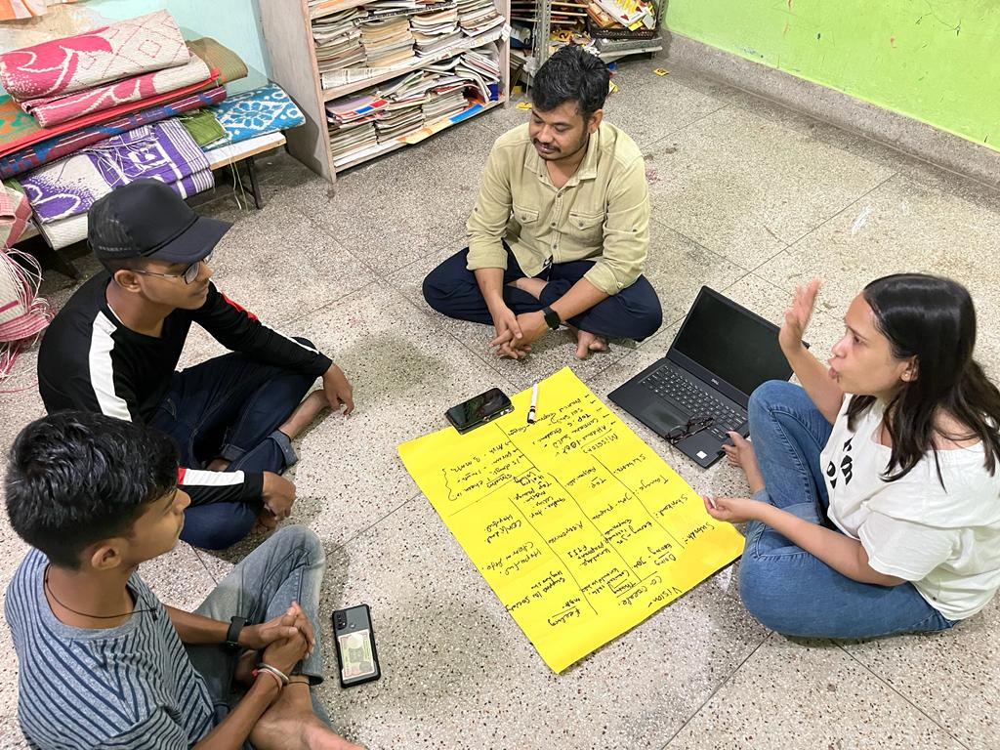
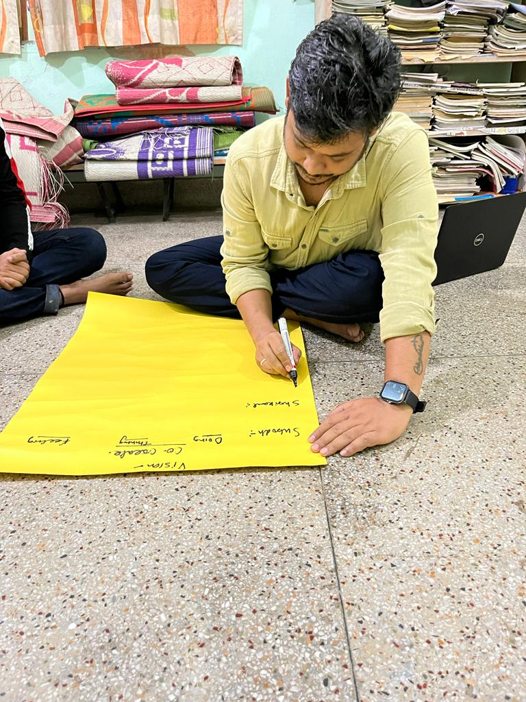

01
Tilak Raj Gauri Memorial Scholarship
Jeevit Raj
- Studying
- Master’s studies
- Institution
- Sir J. J. School of Art, Mumbai
- Support
- College fees
Higher education · Since 2023
Many of the young people on this page first came to Diksha as children or later worked here as Teacher Fellows and educators. Once admission was secured, their families still had to work out how to pay college fees and living costs.
The scholarship programme began with support from Mr Aish Sinha and his family. Today, four students receive support through the Tilak Raj Gauri and Renu Sinha memorial scholarships. Four earlier scholars have completed their courses.
Meet the current scholars
Current scholars · 2026–27
The award is based on the costs each student still has to meet. It may pay college fees, hostel charges or living expenses after other scholarships have been taken into account.
Tilak Raj Gauri Memorial Scholarship
Renu Sinha Memorial Scholarship
Renu Sinha Memorial Scholarship
Renu Sinha Memorial Scholarship

How support is decided
An applicant shares admission papers, fee details and information about any other financial aid. The team then speaks with the student about the course and the expenses the family cannot meet.
A scholarship panel reviews the application and the student’s interaction with Diksha. Awards are approved for one academic year. When support is renewed, attendance, academic progress and any change in financial need are reviewed again.
This is why two scholars may receive different kinds of support. One may need tuition, while another already has a university scholarship but needs help with food and accommodation.
How the programme began
Bharat Education Scholarship provided the first funding. The two memorial scholarships now carry the work forward.
December 2022
Mr Aish Sinha and his family provided ₹5 lakh as the first scholarship fund. Shrikant and Subodh began their courses at Amity University Patna in 2023.
2024
Mithun and Priya Ranjan were the first recipients. Each received ₹1 lakh towards postgraduate study.
FY 2025–26
The Sinha family began supporting students in memory of Late Smt Renu Sinha. Shrikant and Subodh received support in its first year.
In memory of Late Smt Renu Sinha
Late Smt Renu Sinha was the mother of Nishant Kumar, one of Diksha’s founding members. She spent many years in social and community work.
Her family supports the Renu Sinha Memorial Scholarship in her memory. The scholarship currently supports Sonali, Dharmveer and Prakriti.
Completed scholars
Course completion has been confirmed by Diksha. Current employment is not listed unless the scholar has shared it for publication.
Bharat Education Scholarship
Completed Journalism and Mass Communication at Amity University Patna. He was one of the programme’s first two scholars.
Bharat Education Scholarship
Completed a BBA at Amity University Patna. He was selected for the first Bharat cohort in 2023.
Tilak Raj Gauri Memorial Scholarship
Completed an MA in Rural Management at Shiv Nadar University. Mithun first joined Diksha in 2012 and later worked here as an educator and outreach worker.
Tilak Raj Gauri Memorial Scholarship
Completed an MA in Education at Azim Premji University. She was one of the first two Tilak Raj Gauri Memorial scholars.
Higher education scholarships
Donations are used for the costs approved for each scholar, such as tuition, hostel charges or living expenses.